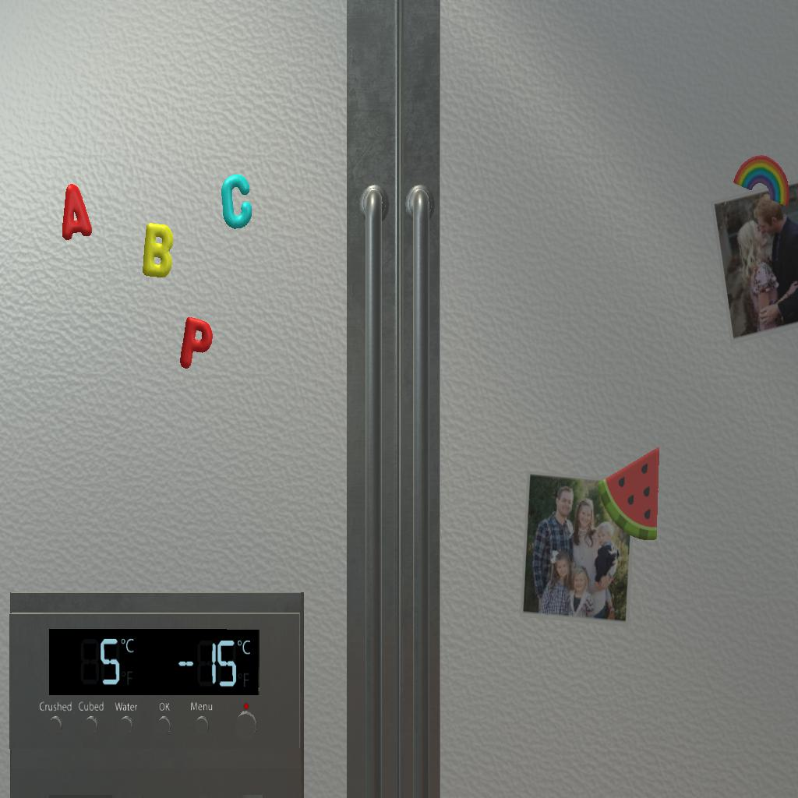

---------------------------------------------------------task: 12---------------------------------------------------------
--------------------------------------------------------------------------------------------------------------------------------------------------------------------
--------------------------------------------------------------------------------------------------------------------------------------------------------------------
Step:--------------------------------------------------------------------------2-------------------------------------------------------------------------------
----------------------------------------
VLM Prompt:
Image1:
Image2:
Image3:
**Instruction**
1. Analyze the provided images to identify all visible household objects and compare the difference between images (e.h. whether the object is opened or not and taken on hand or not), focusing on those relevant to the task description "clean some tomato and put it in countertop."
2. Use the analysis of images and the task hint "The agent must find an object of the desired type, pick it up, go to a sink or a basin, clean the object with a sink or basin, and then find the correct location to place it and put it down there. The agent does not need to use soap bottle or faucet to clean the object, and the agent just needs to do action that is "clean the object with the sink or sink basin"." to answer the question: what is the most reasonable action in the choices for the task description "clean some tomato and put it in countertop"?
3. Decide and write the answer using the template: The answer is: (i): , where i is the real number. If there is no desired object in images, search every place based on **Initial Observation** to find the object. And if no one is exactly correct, choose a similar answer.
**Initial Observation**
You are in the middle of a room. Looking quickly around you, you can see cabinet (1-6), microwave (1), countertop (1-2), coffeemachine (1), toaster (1), sink (1), sinkbasin (1), fridge (1)
**Answer Choices**
(1): go to cabinet 1
(2): go to cabinet 2
(3): go to cabinet 3
(4): go to microwave 1
(5): go to cabinet 4
(6): go to cabinet 5
(7): go to cabinet 6
(8): go to countertop 1
(9): go to coffeemachine 1
(10): go to toaster 1
(11): go to countertop 2
(12): go to sink 1
(13): go to sinkbasin 1
(14): close fridge 1
(15): take apple 1 from fridge 1
(16): take potato 1 from fridge 1
(17): examine fridge 1
**Answer**
Let's think step by step by following the instructions.
----------------------------------------
----------------------------------------
Original Response:
Image Analysis:
- Image 1 shows a sink with a faucet, which could be used to clean an object.
- Image 2 depicts a fridge with a temperature display and some magnetic letters and photos on it. There is no visible tomato inside or outside the fridge.
- Image 3 presents an open cabinet with what appears to be an apple and a potato on one of the shelves. There is no tomato visible in this image.
Task Description Analysis:
The task is to clean a tomato and put it on the countertop. According to the task description, the agent must find a tomato, clean it, and place it on the countertop.
Initial Observation Analysis:
The initial observation lists various cabinets, a microwave, countertops, a coffee machine, a toaster, a sink, a sink basin, and a fridge. The observation suggests searching every place to find the tomato.
Based on the analysis:
- No tomato is visible in the provided images.
- The task requires finding a tomato first before it can be cleaned and placed on the countertop.
The Answer is:
Since the images do not show a tomato, and the initial observation suggests searching every place, the most reasonable action is to search the cabinets as they are common storage areas for fresh produce like tomatoes.
(1): go to cabinet 1
(2): go to cabinet 2
(3): go to cabinet 3
(5): go to cabinet 4
(6): go to cabinet 5
(7): go to cabinet 6
Since no specific cabinet is indicated as having tomatoes, any of these could be the correct action. However, since we must select one, I will choose the first option to start the search systematically.
The answer is: (1): go to cabinet 1
----------------------------------------
----------------------------------------
>>> Refine Original VLM Response and Get Pure Action: go to cabinet 1
----------------------------------------
-----------------------------------------------------------------
Running time: 39.91764783859253 seconds
Total Money: 6.304530000000007
-----------------------------------------------------------------
-----------------------------------------------------------------
Text Observation:You arrive at loc 0. The cabinet 1 is closed.
-----------------------------------------------------------------
UNSUCCEED